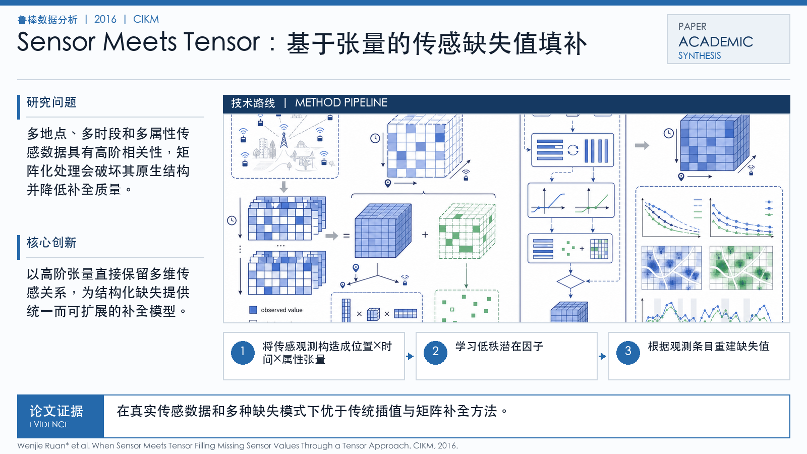

Problem
解决的问题
多地点、多时段和多属性传感数据具有高阶相关性，矩阵化处理会破坏其原生结构并降低补全质量。
Robust Data Analytics · 2016 · CIKM
When Sensor Meets Tensor Filling Missing Sensor Values Through a Tensor Approach
Problem
多地点、多时段和多属性传感数据具有高阶相关性，矩阵化处理会破坏其原生结构并降低补全质量。
Value
在真实传感数据和多种缺失模式下优于传统插值与矩阵补全方法。
Paper-grounded Academic Summary
该代表页依据原文摘要、贡献段与方法图注生成。方法视觉由 ImageGen 按论文证据逐篇绘制，中文研究问题、技术路线、创新点与实验结论采用确定性排版，以保证内容与字符准确。
打开原文 PDF
Technical Route
Innovation